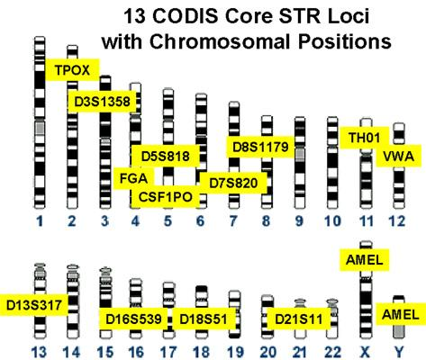
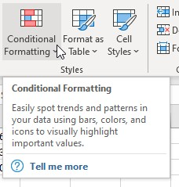

We are told that, unless we have an identical twin, we are genetically unique, and that the particular sequence of DNA that we carry in our genome is different from every other person in the world. There is, of course, no practical way of confirming this, and a more correct statement would be that the chance that two people will be identical across the 3.2 billion bases in our genomes is so small that we don't expect to ever see two genetically identical people unless they are identical twins (and even then somatic mutations can occur that cause them to differ).
Given that we expect some genetic differences between any two people we encounter, we can use genotypes across different genetic loci (which are just identifiable regions of our DNA) to identify them. Different variants of the same genetic locus are called alleles of the locus. DNA fingerprinting has been available for some time, under the Combined DNA Index System (CODIS).
The 13 CODIS loci are distributed among 12 of our 22 autosomes, with the last one (AMEL) found on the sex chromosomes, as illustrated in the figure to the left. These 13 loci are all short tandem repeats (STR), which refers to the tendency for non-coding regions of our DNA (the "junk" DNA we all carry) to have repeating sequences of base pairs adjacent to one another. These non-coding, non-functional sequences are highly polymorphic, meaning there are lots of different alleles for them in the population, which results in lots of possible combinations of alleles that a person can be carrying. With so many possible combinations it is very unlikely that any given set of CODIS STR alleles will be found in two different people, and thus the particular combination becomes a useful unique identifier for an individual, just like a traditional fingerprint.
The names of the gene loci and their locations on the chromosomes are shown in the figure above. It's important that the loci are mostly on different chromosomes, because that ensures that they will assort independently, and thus (for example) the probability that a person will receive a particular allele at the TPOX locus is not affected by their receiving a different allele at the TH01 locus. In the one case in which two STR loci are found on the same chromosome (D5S818 and CSF1PO) they are sufficiently far apart that crossing over makes them independent of one another as well.
How sure can you be?
Consider a typical case in which a spot of blood is found at a murder scene that didn't belong to the victim, and a DNA fingerprint is obtained from it. A suspect is apprehended, a sample of his DNA is taken, from which a DNA fingerprint is also generated. The suspect's DNA fingerprint matches the fingerprint from the spot of blood from the crime scene, but he says he's innocent, and he wasn't even there - the blood must belong to somebody else.
We know that the samples will match if he's the source (assuming no lab errors), but what are the chances of a match if the blood actually came from somebody else? How much more likely is it that he's the source than that it comes from somebody else?
We can calculate the likelihood of a match if he's the source pretty easily - if we use probabilities as our likelihoods then the likelihood of a match for each of the alleles is 1. Multiplying the likelihoods across all of the alleles would still give us a likelihood of a match for every one of the 13 CODIS STR loci of 1.
The more difficult part is to calculate the likelihood of a match if he is not the source of the blood, and the blood came from somebody else who happened to have an identical DNA finger print. We will do that calculation now.
We will use a database of CODIS STR loci frequencies obtained from populations of people throughout the US in this spreadsheet, called codis_freqs.xlsx, taken from this paper - download the Excel spreadsheet into the same folder as the likelihood_data.xlsx file we used last time, and open it. You'll see that there is a column identifying the population, the gene, the allele, and its frequency. There is also a column that is combining the population, gene, and allele into a single label - we'll use this as the basis for looking up frequencies when we do our first analysis.
Step 1. Copy the allele frequencies into your likelihood_data.xlsx file.
It will be much easier to use the population frequencies from codis_freqs.xlsx if we get them into the likelihood_data.xlsx file we are using for this assignment. Which we can do by:
- Make sure that both likelihood_data.xlsx (the file you used for part 1 of this exercise on Tuesday) and codis_freqs.xlsx are open
- Switch to the codis_freqs.xlsx file
- Right-click on the "Freqs" tab at the bottom left of the worksheet, and select "Move or Copy"
- Select "likelihood_data.xlsx" as the "To book:", select "(move to end)" in the "Before sheet:" section, and check the "Create a copy" box.
- Click "OK", and you should now have a copy of the frequencies in a "Freq" sheet in likelihood_data.xlsx
- Close codis_freqs.xlsx
Now we can use the data in Freqs to get the population frequencies for the alleles found in the DNA fingerprint on the DNA sheet.
Step 2. Look up the allele frequencies.
Switch now to sheet "DNA", and you will see that you have a DNA fingerprint entered, which is a list of CODIS STR loci (row labels, in the Locus column), and the two alleles found at them (columns Allele 1 and Allele 2). The alleles are identified by numeric codes - for example, at gene locus D3S1358 this individual has allele #15 and allele #16.
We need to select the frequencies from the Freq sheet that are the correct population, CODIS locus, and allele number, but this information is in three different cells, whereas the function we're using can only look up one cell. We can fix this by concatenating the three things we need to use in our lookup into one label:
- Enter the label "A1 lookup" in cell D1, and "A2 lookup" in cell E1
- Enter the label "Population" in cell A16, and "Apache" in cell B16 (we'll try out other populations later)
- In cell D2 enter =$b$16&a2&b2 - this concatenates the population (b16), gene (a2) and allele (b2) into a single label, ApacheD3S134815
- Copy and paste cell D2 to the rest of the rows (D3 through D14)
- In E2 do the same for allele 2 - concatenate the population, gene, and allele2 together (it will read ApacheD32S135816 if all went well)
- Copy and paste cell E2 to the rest of the rows (E3 through E14)
Next we will use the xlookup() function to find the frequencies for these alleles - this is a new and improved version of Excel's lookup(), and is only available in "recent" releases...if you're using Excel 365 on either Windows or Mac you'll definitely have it.
The format for xlookup() is:
xlookup(value.to.look.up, cell.range.to.look.in.for.matches, cell.range.to.return.if.there.is.a.match, value.to.return.if.no.match)
which for our purposes translates into:
- Enter the label "p" in cell F1, and "q" in G1 - p is the frequency of the first allele, q is the frequency of the second
- In cell F2 enter the formula =xlookup(d2, Freqs!$E$2:$E$3180, Freqs!$D$2:$D$3180, 0)
- In cell G2 enter the formula =xlookup(e2,Freqs!$E$2:$E$3180,Freqs!$D$2:$D$3180,0)
You should now see a value of 0.684896 in F2 for p, and 0.184896 in G2 for q. The cell references for the range of cells for the second and third arguments have a sheet identifier, Freqs!, which point to the database of frequencies.
Select cells F2 and G2, copy and paste them to the rest of the rows - you should now have the allele frequencies for each allele.
**Note** there is a typo in the file - the name of the gene in A12 is TH01 (with a zero), not THO1 (with the capital letter O) - please change the label to TH01 or end up with 0's for the allele frequencies.
These allele frequencies can be used as probabilities - the frequency in the p column for D3S1358 of 0.684896 is also the probability of randomly selecting an allele for that gene from the population and having it be allele 15. And, we can treat probabilities as likelihoods - the probability of 0.684896 is also the likelihood of allele 15 at gene D3S1348 for someone from the Apache population. Looking up the frequencies from the database thus also enters the likelihoods for each allele.
Step 3. Calculate the genotype frequencies.
The alleles at a gene locus together form a genotype, and we can use the frequencies of the alleles to copy the expected frequency of the genotype. The CODIS loci are all neutral, non-coding junk DNA, so we expect them to combine at random, and we can predict the genotype frequencies that would result from random mating like so:
| Mom |
|||
|---|---|---|---|
| p | q | ||
| Dad |
p |
p2 |
pq |
| q |
pq |
q2 |
|
Based on this table, homozygotes for the p allele would occur at a frequency of p2, homozygotes for the q allele would occur at a frequency of q2, and heterozygotes would occur at a frequency of pq + pq, or 2pq. These frequencies would also be the likelihoods of the genotypes.
Note that the formula we need to use is different for homozygotes (p2 or q2) and heterozygotes (2pq). We can make the calculation performed depend on whether the gene is homozygous or heterozygous by using the "if()" function:
- Enter the label "Genotype frequency" in column H1
- Enter the formula =if(b2=c2, f2*g2, 2*f2*g2) in cell H2
The first argument for the if() function is a logical test - here, we test whether the allele numbers are the same for both Allele 1 (in cell b2) and Allele 2 (in cell c2). If they are the same then the second argument is used for the calculation, and the frequency in f2 is multiplied by the frequency in g2 - since this is a homozygote the two alleles are the same, which means they both have the same frequency, and multiplying a frequency by itself squares it. If the logical test is false (i.e. b2 isn't equal to c2) then they are heterozygous for the gene, and the third argument is used for the calculation instead, which is 2*f2*g2.
Now that you have the first one done you can copy and paste H2 to H3 through H14 to calculate the genotype frequencies for the rest of the loci.
Step 4. Calculate the likelihood of the entire fingerprint if the suspect is not the source of the blood.
To calculate the likelihood of the entire DNA fingerprint, we need only to multiply the likelihoods of each genotype together. In cell G16 enter the label "Likelihood", and in H16 multiply the likelihoods together with =product(h2:h14)
Step 5. Calculate the ratio of likelihoods.
The value you just calculated in cell H16 is the likelihood of a match if the person this fingerprint came from is not the source of the blood sample. Since we're using probabilities as likelihoods here, we can also interpret this as a probability - the probability of randomly selecting a person from the population who is not the source of the blood, but nevertheless has a DNA fingerprint that matched the one from the crime scene, is thus 1.1701E-13.
As you read in the introduction above, the probability of a match if the suspect is the source of the blood is 1 - and thus, the likelihood is also 1.
We now have the likelihood for two different possibilities, and we can compare them with a likelihood ratio. Enter the label "Likelihood ratio" in cell G18, and in H18 enter =1/H16.
This ratio tells you how many times more likely it is that this person is the source of the blood than that he is not the source of the blood - you'll get a value of 8.5462E+12. You can think of this as being equivalent to the number of people you would need to select before you would expect to match this DNA fingerprint by chance (there are currently about 7 billion people on the planet, which is 7 x 109, so it would take about 1000 times more people than there currently are on the planet before we'd expect a match from somebody who wasn't the actual source of the blood).
Likelihood-based assignment
Another thing we can do with this DNA fingerprint is to predict which population the blood sample comes from. The Freqs sheet has alleles from several populations, and we can calculate likelihoods of coming from each population given the DNA fingerprint of the person - whichever population has the highest likelihood would be the population we would predict the person is from (this prediction is often called assignment).
Note that we're using this CODIS STR data as a convenience, since we already have everything set up for it. But these are not necessarily the best loci to use for inferring ancestry (services like 23 and Me use single nucleotide polymorphisms (SNP) instead of STR loci). However, this exercise will give you an idea of how the analysis is done.
**IMPORTANT** I thought of an improvement to this part of the exercise at the last minute, which makes everything that is currently in your WhichPopulation sheet unnecessary. We now just want that sheet to be blank, so do this:
- Switch to the WhichPopulation sheet in the likelihood_data.xlsx file you started last time
- Click on the triangle to the left of the A column, and above the 1 row - you should see that the entire sheet is selected
- Hit the "Delete" key on your keyboard - you should have a blank sheet now for WhichPopulation
All set - on to the assignment.
1. Get a list of the populations.
Switch to the Freqs sheet, and you'll see that the populations are listed in column A. All we need is a list of the populations that are in this column, which we can extract using an advanced filter:
- Click on the column letter A to select the entire Population column
- Switch to the Data tab, find the "Sort & Filter" buttons, and click on "Advanced"
- In the "Advanced Filter" window that pops up, click on the "Copy to another location" button
- The "List range" should be set to $A$1:$A$3180, which is every cell with an entry in column A - this is fine, no change
- Enter G1 into the "Criteria range" - this is used to specify what we want to select from the column, but we just need to enter a blank cell here to get our list
- In the "Copy to:" box enter the cell H1
- Click on the "Unique records only" box - this will cause just a single copy of each population to be returned
- Click "OK"
You'll now have a list of each unique population in column H. Select the whole list, including the Population column heading, cut the cells and paste them to cell A3 of the WhichPopulation sheet.
Enter the label "Likelihoods" in cell A1 of the WhichPopulation sheet.
2. Calculate the likelihoods of the populations given the DNA fingerprint.
Now that we have our list of populations we'll calculate the likelihood of each one, and enter it in column B, next to the population labels
- Enter "Likelihood" in cell B3
- Copy the first population label in cell A4 (select the cell and copy it)
- Switch to the "DNA" sheet and paste the cell in cell B16, next to the "Population:" label - the likelihood calculations will update for this new population
- Copy the likelihood in cell H16, switch to the WhichPopulation sheet, and paste-special its value in cell B4, next to the population's label
Repeat these steps for each population - when you're done you should have a likelihood in column B for every population in column A.
3. Identify the largest likelihood.
We can have Excel help us identify the largest likelihood using conditional formatting. Conditional formatting sets some aspect of a cell's format depending on the cell's value, by itself or relative to other cells in a range that you specify.
- Select the cells B4 through B15
- Click on "Conditional Formatting"
in the "Home" tab, and select "Top/Bottom Rules", then "More rules...
 ".
". - In the "New Formatting Rule" window, find the "Edit the Rule Description" area, and set the number to 1 so that only the highest value will be formatted differently.
- Then, click on "Format...", and change the format to bold italics. This will set the format of the largest likelihood ratio to a bold italic, which makes it easy to identify.
You should see that the SW Hispanic population has the highest likelihood - based on the likelihoods of these populations given the DNA fingerprint we would predict that this person is a member of the SW Hispanic population.
4. Calculate likelihood ratios for all the populations.
We now know that the population with the highest likelihood for this fingerprint is SW Hispanic, but how much greater is the likelihood than other populations? We can calculate ratios for the SW Hispanic likelihood divided by every other populations to find out.
- Enter "Likelihood ratios" in cell D2
- Copy the list of populations in A3 through A15 and paste them into D3 through D15
- Copy the SW Hispanic label from A8 and paste it into E3
- In cell E4 enter the formula =xlookup(e$3, $a$4:$a$15, $b$4:$b$15)/xlookup(d4,$a$4:$a$15, $b$4:$b$15) - this formula divides the SW Hispanic population likelihood by the African American Bahamian Jamaican population likelihood, which is equal to 86.42.
- Copy and paste E4 to the rest of the cells below
This formula uses the population in the column label (cell e3, SW Hispanic) to look up the likelihood for the numerator, and then uses the population in the row labels (d4) to look up the likelihood for the denominator. By using a dollar sign before the row number in e$3 we can copy and paste this formula to the rows below and continue to point at the column label in row 3, but with no dollar sign in d4 the row updates as we paste it into each row.
We can use the same conditional formatting trick we did to find the maximum likelihood to highlight the maximum ratio.
- Select cells E4 to E15, and get to the same formatting rule editor as you did for the maximum likelihood.
- Set the rule to find the top 1 value, and change its format to bold italic with red text.
Once you are done, you'll see that the likelihood ratio is pretty small for several populations (Caucasian, SE hispanic) - given this, we would not be very confident in concluding that this person is from a SW Hispanic population rather than a SE Hispanic or Caucasian population. The largest ratio, 369.68, is for SW Hispanic divided by Filipino - it is thus 369.68 times more likely that this person is from a SW Hispanic population than from a Filipino populations, and we could be more confident in concluding they are not Filipino than we were in concluding they are not SE Hispanic or Caucasian.
Assignment
That's it! Upload your completed worksheet with the curve fitting and DNA analysis to the class web site.